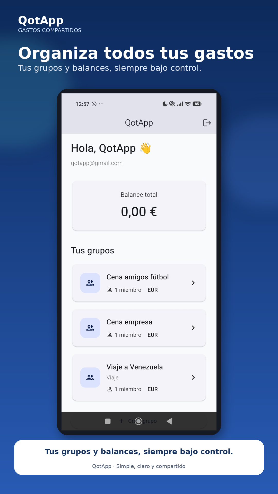
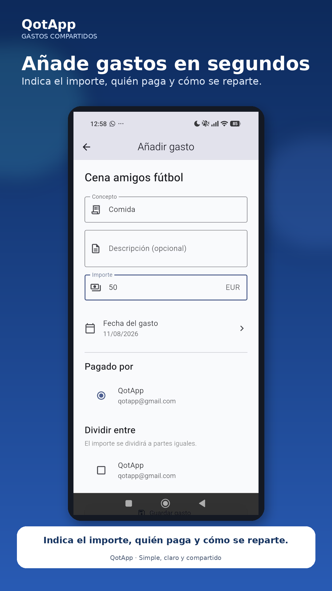
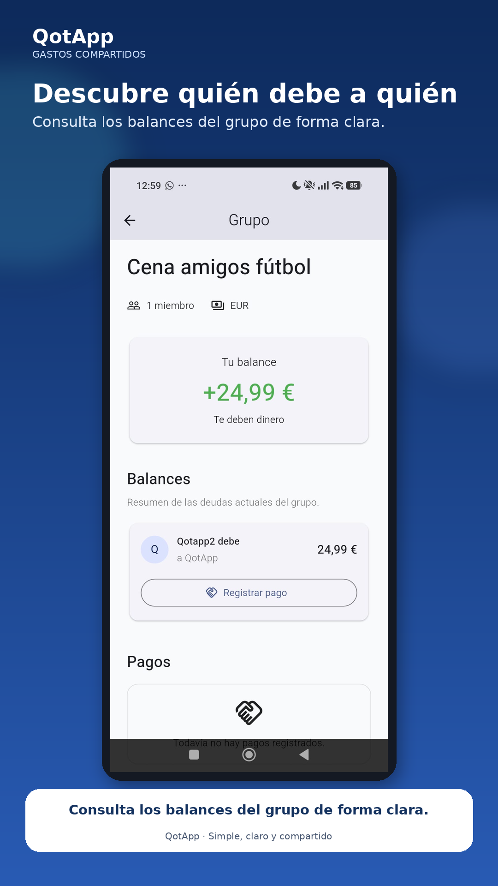
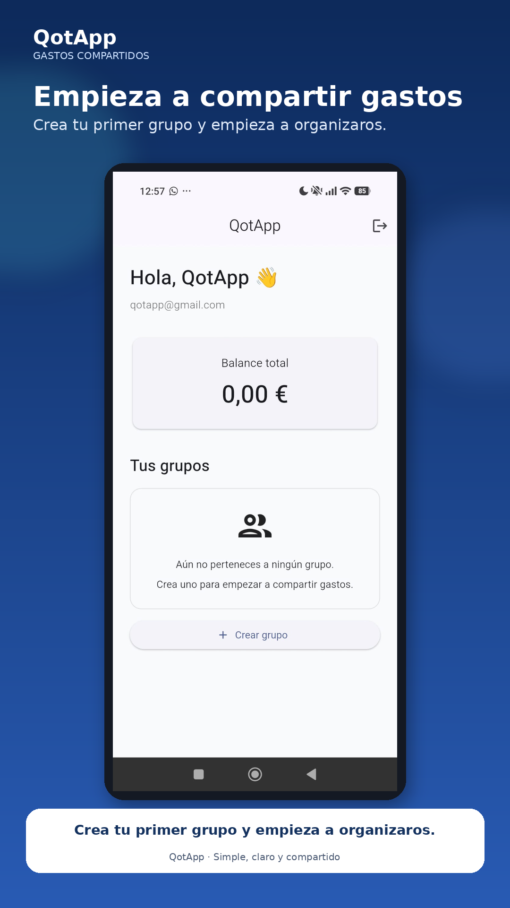

Crea grupos
Crea grupos para viajes, amigos, familia, compañeros de piso o cualquier situación en la que haya gastos compartidos.
QotApp te ayuda a organizar gastos compartidos, saber quién debe a quién y mantener todas tus cuentas organizadas en un mismo lugar.
Gratis para empezar · Sin complicaciones

Desde una cena con amigos hasta un viaje, organiza los gastos y deja que QotApp haga las cuentas por ti.
Crea grupos para viajes, amigos, familia, compañeros de piso o cualquier situación en la que haya gastos compartidos.
Registra rápidamente quién ha pagado, cuánto y entre qué personas se debe repartir.
QotApp calcula automáticamente los balances y te muestra quién debe dinero a quién.
Cuando una deuda se paga, registra la liquidación y mantén un historial de los pagos realizados.
Consulta los gastos y movimientos anteriores de tus grupos cuando lo necesites.
Tu cuenta y tus datos están protegidos mediante los servicios de Firebase.
Crea un grupo e invita a las personas con las que vas a compartir gastos.
Indica qué se ha comprado, cuánto ha costado y quién ha pagado.
Consulta rápidamente los balances y las deudas existentes entre los miembros.
Cuando alguien paga su deuda, registra el pago y mantén el historial actualizado.
Consulta tus grupos, añade gastos y controla tus balances desde una interfaz sencilla.



QotApp nace para ayudarte a compartir gastos, pero queremos llevarlo mucho más allá.
Nuestro objetivo es convertir QotApp en un lugar donde puedas registrar y entender también tus propios gastos del día a día.
Lleva un histórico de tus propios gastos.
Registra lo que consumes y consulta tus gastos a lo largo del tiempo.
Fotografía un ticket y deja que QotApp extraiga automáticamente sus productos.
Decide quién ha consumido cada producto y deja que QotApp calcule el reparto.
Descubre una forma más sencilla de organizar tus gastos compartidos.
Consulta nuestra política de privacidad para conocer cómo QotApp recopila, utiliza y protege la información de los usuarios.